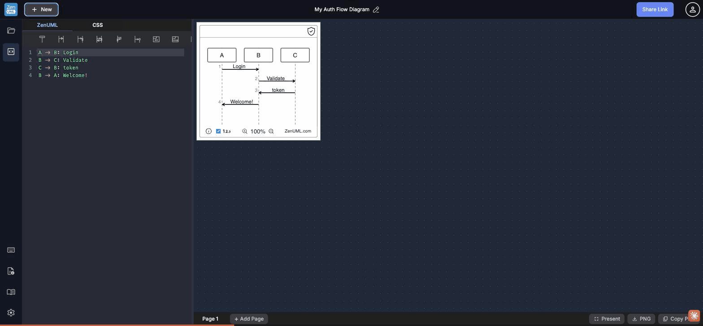

WCAG 2.1 contrast audit · Share Link CTA · Editor line numbers · Diagram SVG elements · Color-only encoding

The primary conversion button "Share Link" renders near-white text rgb(245,245,245) on a medium-blue background rgb(103,134,247). At 14px font size this requires a contrast ratio of 4.5:1 — the measured ratio of 3.04:1 falls 33% short of WCAG AA compliance.
Impact: This is the most prominent interactive element in the header, visible on every diagram. Users with low vision, in bright ambient light, or on low-gamut displays may struggle to read it. WCAG 1.4.3 (Contrast Minimum, Level AA) failure.
#4355CC (passes 4.74:1) or increase the text to 18px/bold (drops requirement to 3:1). Alternatively invert to a dark button with light text: background:#1e293b; color:#fff easily passes at 15:1.Editor line numbers render as rgb(109,138,136) (a muted teal) on rgb(40,42,54) (the Dracula theme background). At 14px with normal weight, the measured 3.83:1 ratio is below the 4.5:1 WCAG AA threshold for normal text.
While line numbers are often considered secondary UI, they are functional text that keyboard-navigating users, developers debugging syntax, and screen reader users rely on to locate specific lines. WCAG 1.4.3 applies to all meaningful text.
rgb(145,165,163) or higher. With Dracula theme, a value around #A8B8B7 achieves 5:1+ while remaining clearly secondary to code content. Alternatively, bump font size to 18px (drops threshold to 3:1).Block-type icons (the <> diamond for "Alt" and the loop arrow for "Loop") are rendered as SVG text/paths in #A5A5A5 on the white diagram canvas. The measured contrast ratio is 2.46:1 — below the WCAG 1.4.11 (Non-text Contrast, Level AA) minimum of 3:1 required for graphical UI components that convey meaning.
These icons are the only visual indicator of which block type (conditional vs. loop) is being represented. A user who cannot distinguish the icon must rely on the block label text instead.
#A5A5A5 to #767676 or darker. #767676 achieves exactly 4.54:1 on white — solidly passing AA. Or use a distinct shape/stroke instead of relying on the icon alone.In the CodeMirror editor, different token types are distinguished exclusively by color: identifiers in green, message text in pink/magenta, arrows in green, keywords and punctuation in white. No secondary cues — bold weight, italics, underline — differentiate token types for users with color vision deficiency.
An estimated 8% of males have some form of color vision deficiency. For a developer tool targeting engineers, this is a significant portion of the audience. WCAG 1.4.1 (Use of Color, Level A) prohibits using color as the only visual means of conveying information.
Test: In a deuteranopia simulation, green identifiers and green arrows blend to the same hue, making it visually impossible to distinguish participant names from message arrows without bold weight or other cues.
font-weight: 700), make strings italic, or use the Dracula theme's built-in styles which provide some weight variation. CodeMirror supports per-token styles via the theme configuration.The split-pane layout places a dark editor (#282a36, very dark) directly beside a bright white diagram canvas (#ffffff). The luminance ratio between the two panels is approximately 100:1. Users working extended sessions or with photosensitivity must continuously adapt their eyes between the two extreme luminance zones.
Modern tools (Mermaid Live Editor, dbdiagram.io, Excalidraw) all offer dark diagram themes or allow diagram background color configuration. ZenUML's CSS tab could theoretically allow this, but the feature requires knowing the internal CSS class names — it is not discoverable.
--diagram-bg: #1e1e2e; --diagram-ink: #cdd6f4;.